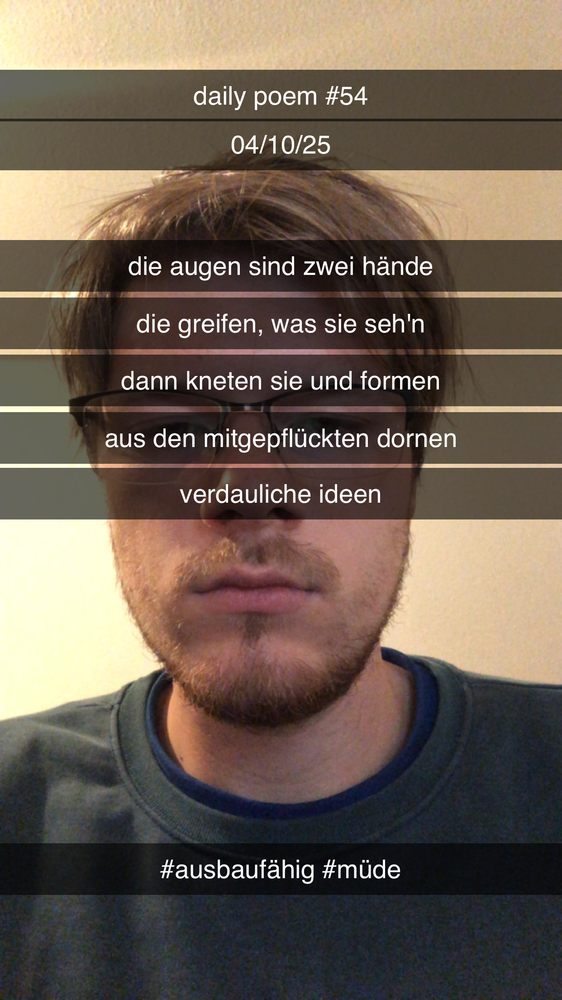

Die Augen sind zwei Hände
[54]Die Augen sind zwei Hände,
Die greifen, was sie seh'n –
Dann kneten sie und formen
Aus den mitgepflückten Dornen –
Verdauliche Ideen.

Die Augen sind zwei Hände,
Die greifen, was sie seh'n –
Dann kneten sie und formen
Aus den mitgepflückten Dornen –
Verdauliche Ideen.
